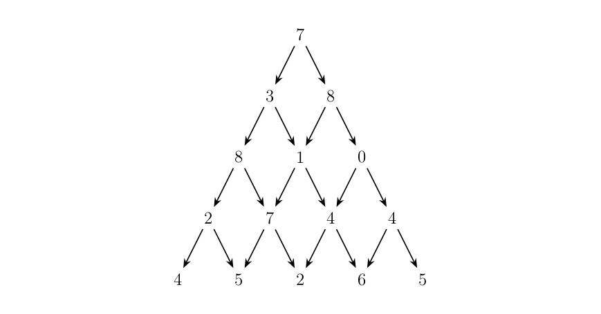
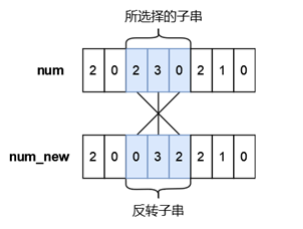

17 、动态规划
1、思想
Warning
递推状态方程表示
2、0/1背包问题
\(n\)个背包，每个价值\(v_i\)，每个体积\(w_i\)，求最大价值
dp[i][j]表示前\(i\)个物品，容量为\(j\)时的最大价值
①不拿 dp[i][j] = dp[i-1][j]
②拿 dp[i][j] = dp[i-1][j-w[i]] + v[i]
例题
e.g.53 [USACO1.5] [IOI1994]数字三角形 Number Triangles
题目描述
观察下面的数字金字塔。
写一个程序来查找从最高点到底部任意处结束的路径，使路径经过数字的和最大。每一步可以走到左下方的点也可以到达右下方的点。

在上面的样例中，从 \(7 \to 3 \to 8 \to 7 \to 5\) 的路径产生了最大权值。
输入格式
第一个行一个正整数 \(r\) ,表示行的数目。
后面每行为这个数字金字塔特定行包含的整数。
输出格式
单独的一行,包含那个可能得到的最大的和。
样例
样例输入
样例输出
提示
【数据范围】
对于 \(100\%\) 的数据，\(1\le r \le 1000\)，所有输入在 \([0,100]\) 范围内。
题目翻译来自NOCOW。
USACO Training Section 1.5
IOI1994 Day1T1
Tip
dp[i][j]表示现在在i-1层，i层在j点最大
递推方程：\(dp[i][j] = max(dp[i - 1][j], dp[i - 1][j - 1]) + a[i][j];\)
#include <bits/stdc++.h>
using namespace std;
const int N = 1005;
int dp[N][N];
int main() {
int r;
cin >> r;
int a[N][N];
for (int i = 1; i <= r; i++) {
for (int j = 1; j <= i; j++) {
cin >> a[i][j];
}
}
for (int i = 1; i <= r; i++) {
for (int j = 1; j <= i; j++) {
dp[i][j] = max(dp[i - 1][j], dp[i - 1][j - 1]) + a[i][j];
}
}
cout << *max_element(dp[r] + 1, dp[r] + r + 1) << endl;
}
e.g.54 最长上升子序列
题目描述
这是一个简单的动规板子题。
给出一个由 \(n(n\le 5000)\) 个不超过 \(10^6\) 的正整数组成的序列。请输出这个序列的最长上升子序列的长度。
最长上升子序列是指，从原序列中按顺序取出一些数字排在一起，这些数字是逐渐增大的。
输入格式
第一行，一个整数 \(n\)，表示序列长度。
第二行有 \(n\) 个整数，表示这个序列。
输出格式
一个整数表示答案。
样例
样例输入
样例输出
提示
分别取出 \(1\)、\(2\)、\(3\)、\(4\) 即可。
Tip
dp[i] 表示以第i项结尾的，最长的子序列的长度
递推方程：\(dp[i] = max ( dp[i] , dp[j] + 1 ) ;\)
#include <bits/stdc++.h>
using namespace std;
const int N = 1e5 + 10;
int n, a[N], dp[N];
int main() {
cin >> n;
for (int i = 1; i <= n; i++) {
cin >> a[i];
dp[i] = 1;
}
for (int i = 1; i <= n; i++) {
for (int j = 1; j < i; j++) {
if (a[i] > a[j]) {
dp[i] = max(dp[i], dp[j] + 1);
}
}
}
cout << *max_element(dp + 1, dp + n + 1) << " ";
}
e.g.55 [蓝桥杯 2023 省 A] 更小的数
题目描述

小蓝有一个长度均为 \(n\) 且仅由数字字符 \(0 \sim 9\) 组成的字符串，下标从 \(0\) 到 \(n-1\)，你可以将其视作是一个具有 \(n\) 位的十进制数字 \(num\)，小蓝可以从 \(num\) 中选出一段连续的子串并将子串进行反转，最多反转一次。小蓝想要将选出的子串进行反转后再放入原位置处得到的新的数字 \(num_{new}\) 满足条件 \(num_{new}<num\)，请你帮他计算下一共有多少种不同的子串选择方案，只要两个子串在 \(num\) 中的位置不完全相同我们就视作是不同的方案。
注意，我们允许前导零的存在，即数字的最高位可以是 \(0\)，这是合法的。
输入格式
输入一行包含一个长度为 \(n\) 的字符串表示 \(num\)（仅包含数字字符 \(0 \sim 9\)），从左至右下标依次为 \(0 \sim n-1\)。
输出格式
输出一行包含一个整数表示答案。
样例
样例输入
样例输出
提示
【样例说明】
一共有 \(8\) 种不同的方案：
- 所选择的子串下标为 \(0\sim1\)，反转后的 \(num_{new} = 120102 < 210102\)；
- 所选择的子串下标为 \(0\sim2\)，反转后的 \(num_{new} = 012102 < 210102\)；
- 所选择的子串下标为 \(0\sim3\)，反转后的 \(num_{new} = 101202 < 210102\)；
- 所选择的子串下标为 \(0\sim4\)，反转后的 \(num_{new} = 010122 < 210102\)；
- 所选择的子串下标为 \(0\sim5\)，反转后的 \(num_{new} = 201012 < 210102\)；
- 所选择的子串下标为 \(1\sim2\)，反转后的 \(num_{new} = 201102 < 210102\)；
- 所选择的子串下标为 \(1\sim4\)，反转后的 \(num_{new} = 201012 < 210102\)；
- 所选择的子串下标为 \(3\sim4\)，反转后的 \(num_{new} = 210012 < 210102\)。
【评测用例规模与约定】
对于 \(20\%\) 的评测用例，\(1 \le n \le 100\)；
对于 \(40\%\) 的评测用例，\(1 \le n \le 1000\)；
对于所有评测用例，\(1 \le n \le 5000\)。
Tip
状态转移方程： $$ s_i>s_j,dp_{i,j}=true\ $$ $$ s_i=s_j,dp_{i,j}=dp_{i+1,j-1}\ $$ $$ s_i<s_j,dp_{i,j}=false $$
#include <bits/stdc++.h>
using namespace std;
bool dp[5005][5005]; // 定义dp数组
int main() {
int ans = 0; // 计数器
string s;
cin >> s;
for (int i = s.size() - 1; i >= 0; i--) {
for (int j = i; j < s.size(); j++) {
// 状态转移方程
if (s[i] > s[j])
dp[i][j] = true;
else if (s[i] == s[j])
dp[i][j] = dp[i + 1][j - 1];
if (dp[i][j] == true)
ans++; // 如果等于1方案数加1
}
}
cout << ans;
return 0;
}
e.g.56 [NOIP2005 普及组] 采药
题目描述
辰辰是个天资聪颖的孩子，他的梦想是成为世界上最伟大的医师。为此，他想拜附近最有威望的医师为师。医师为了判断他的资质，给他出了一个难题。医师把他带到一个到处都是草药的山洞里对他说：“孩子，这个山洞里有一些不同的草药，采每一株都需要一些时间，每一株也有它自身的价值。我会给你一段时间，在这段时间里，你可以采到一些草药。如果你是一个聪明的孩子，你应该可以让采到的草药的总价值最大。”
如果你是辰辰，你能完成这个任务吗？
输入格式
第一行有 \(2\) 个整数 \(T\)（\(1 \le T \le 1000\)）和 \(M\)（\(1 \le M \le 100\)），用一个空格隔开，\(T\) 代表总共能够用来采药的时间，\(M\) 代表山洞里的草药的数目。
接下来的 \(M\) 行每行包括两个在 \(1\) 到 \(100\) 之间（包括 \(1\) 和 \(100\)）的整数，分别表示采摘某株草药的时间和这株草药的价值。
输出格式
输出在规定的时间内可以采到的草药的最大总价值。
样例
样例输入
样例输出
提示
【数据范围】
- 对于 \(30\%\) 的数据，\(M \le 10\)；
- 对于全部的数据，\(M \le 100\)。
【题目来源】
NOIP 2005 普及组第三题
#include <bits/stdc++.h>
using namespace std;
const int N = 1005;
struct node {
int t, v;
} e[N]; // t: time, v: value
int T, M, dp[N][N];
int main() {
cin >> T >> M;
for (int i = 1; i <= M; i++) {
cin >> e[i].t >> e[i].v;
}
for (int i = 1; i <= M; i++) {
for (int j = 1; j <= T; j++) {
dp[i][j] = dp[i - 1][j];
if (j >= e[i].t) {
dp[i][j] = max(dp[i][j], dp[i - 1][j - e[i].t] + e[i].v);
}
}
}
cout << dp[M][T] << endl;
}
e.g.57 2022
问题描述
将 2022 拆分成 10 个互不相同的正整数之和, 总共有多少种拆分方法?
注意交换顺序视为同一种方法, 例如 \(2022=1000+1022\) 和 \(2022= 1022+1000\)就视为同一种方法。
Tip
dp[i][j][k] 表示 i 个数，选了 j 个，和为 k
①不选 dp[i][j][k] = dp[i - 1][j][k]
②选 dp[i][j][k] = dp[i - 1][j - 1][k - a[i]]
#include <bits/stdc++.h>
using namespace std;
typedef long long ll;
int n = 2022, m = 2022, k = 10;
ll dp[2050][11][2050];
int main() {
for (int i = 0; i <= n; i++)
dp[i][0][0] = 1;
for (int i = 1; i <= n; i++) {
for (int j = 1; j <= k; j++) {
for (int l = 1; l <= m; l++) {
dp[i][j][l] = dp[i - 1][j][l];
if (l >= i)
dp[i][j][l] += dp[i - 1][j - 1][l - i];
}
}
}
cout << dp[n][k][m] << endl;
}
e.g.58 小A点菜
题目背景
uim 神犇拿到了 uoi 的 ra（镭牌）后，立刻拉着基友小 A 到了一家……餐馆，很低端的那种。
uim 指着墙上的价目表（太低级了没有菜单），说：“随便点”。
题目描述
不过 uim 由于买了一些书，口袋里只剩 \(M\) 元 \((M \le 10000)\)。
餐馆虽低端，但是菜品种类不少，有 \(N\) 种 \((N \le 100)\)，第 \(i\) 种卖 \(a_i\) 元 \((a_i \le 1000)\)。由于是很低端的餐馆，所以每种菜只有一份。
小 A 奉行“不把钱吃光不罢休”的原则，所以他点单一定刚好把 uim 身上所有钱花完。他想知道有多少种点菜方法。
由于小 A 肚子太饿，所以最多只能等待 \(1\) 秒。
输入格式
第一行是两个数字，表示 \(N\) 和 \(M\)。
第二行起 \(N\) 个正数 \(a_i\)（可以有相同的数字，每个数字均在 \(1000\) 以内）。
输出格式
一个正整数，表示点菜方案数，保证答案的范围在 int 之内。
样例
样例输入
样例输出
#include <bits/stdc++.h>
using namespace std;
const int N = 1005;
int n, m, a[N], dp[N][N];
int main() {
cin >> n >> m;
for (int i = 1; i <= n; i++)
cin >> a[i];
/*
dp[i][j]表示前i道菜，花j元的方法数
①不点 第i道菜 dp[i][j] = dp[i-1][j]
②点第i道菜 dp[i][j] += dp[i-1][j-a[i]]
*/
for (int i = 0; i <= n; i++)
dp[i][0] = 1; // 初始化,前n道菜，花0元的方法数为1
for (int i = 1; i <= n; i++) {
for (int j = 1; j <= m; j++) {
dp[i][j] = dp[i - 1][j];
if (j >= a[i])
dp[i][j] += dp[i - 1][j - a[i]];
}
}
cout << dp[n][m] << endl;
}
e.g.58 [蓝桥杯 2017 省 AB] 包子凑数
题目描述
小明几乎每天早晨都会在一家包子铺吃早餐。他发现这家包子铺有 \(N\) 种蒸笼，其中第 \(i\) 种蒸笼恰好能放 \(A_i\) 个包子。每种蒸笼都有非常多笼，可以认为是无限笼。
每当有顾客想买 \(X\) 个包子，卖包子的大叔就会迅速选出若干笼包子来，使得这若干笼中恰好一共有 \(X\) 个包子。比如一共有 \(3\) 种蒸笼，分别能放 \(3\) 、 \(4\) 和 \(5\) 个包子。当顾客想买 \(11\) 个包子时，大叔就会选 \(2\) 笼 \(3\) 个的再加 \(1\) 笼 \(5\) 个的（也可能选出 \(1\) 笼 \(3\) 个的再加 \(2\) 笼 \(4\) 个的）。
当然有时包子大叔无论如何也凑不出顾客想买的数量。比如一共有 \(3\) 种蒸笼，分别能放 \(4\) 、 \(5\) 和 \(6\) 个包子。而顾客想买 \(7\) 个包子时，大叔就凑不出来了。
小明想知道一共有多少种数目是包子大叔凑不出来的。
输入格式
第一行包含一个整数 \(N\)。\((1 \le N \le 100)\)。
以下 \(N\) 行每行包含一个整数 \(A_i\)。\((1 \le A_i \le 100)\)。
输出格式
一个整数代表答案。如果凑不出的数目有无限多个，输出 INF。
样例
样例输入
样例输出
样例
样例输入
样例输出
提示
对于样例 \(1\)，凑不出的数目包括：\(1,2,3,6,7,11\)。
对于样例 \(2\)，所有奇数都凑不出来，所以有无限多个。
蓝桥杯 2017 省赛 A 组 H 题。
Tip
dp[i]表示i个能否凑出来
dp[i]=1,dp[i+w]=1
#include <bits/stdc++.h>
using namespace std;
typedef long long ll;
const int N = 1e5 + 10;
int n, a[105], dp[N];
int main() {
cin >> n;
for (int i = 1; i <= n; i++)
cin >> a[i];
int d = 0;
for (int i = 1; i <= n; i++)
d = __gcd(d, a[i]);
if (d != 1)
cout << "INF" << endl;
else {
for (int i = 1; i <= n; i++) {
dp[a[i]] = 1;
for (int j = a[i]; j < N; j++)
if (dp[j - a[i]] == 1)
dp[j] = 1;
}
int ans = 0;
for (int i = 1; i < N; i++)
if (dp[i] == 0)
ans++;
cout << ans << endl;
}
return 0;
}
e.g.59 疯狂的采药（完全背包问题）
题目背景
此题为纪念 LiYuxiang 而生。
题目描述
LiYuxiang 是个天资聪颖的孩子，他的梦想是成为世界上最伟大的医师。为此，他想拜附近最有威望的医师为师。医师为了判断他的资质，给他出了一个难题。医师把他带到一个到处都是草药的山洞里对他说：“孩子，这个山洞里有一些不同种类的草药，采每一种都需要一些时间，每一种也有它自身的价值。我会给你一段时间，在这段时间里，你可以采到一些草药。如果你是一个聪明的孩子，你应该可以让采到的草药的总价值最大。”
如果你是 LiYuxiang，你能完成这个任务吗？
此题和原题的不同点：
\(1\). 每种草药可以无限制地疯狂采摘。
\(2\). 药的种类眼花缭乱，采药时间好长好长啊！师傅等得菊花都谢了！
输入格式
输入第一行有两个整数，分别代表总共能够用来采药的时间 \(t\) 和代表山洞里的草药的数目 \(m\)。
第 \(2\) 到第 \((m + 1)\) 行，每行两个整数，第 \((i + 1)\) 行的整数 \(a_i, b_i\) 分别表示采摘第 \(i\) 种草药的时间和该草药的价值。
输出格式
输出一行，这一行只包含一个整数，表示在规定的时间内，可以采到的草药的最大总价值。
样例
样例输入
样例输出
提示
数据规模与约定
- 对于 \(30\%\) 的数据，保证 \(m \le 10^3\) 。
- 对于 \(100\%\) 的数据，保证 \(1 \leq m \le 10^4\)，\(1 \leq t \leq 10^7\)，且 \(1 \leq m \times t \leq 10^7\)，\(1 \leq a_i, b_i \leq 10^4\)。
#include <bits/stdc++.h>
using namespace std;
typedef long long ll;
const int N = 1e4 + 10, M = 1e7 + 10;
struct node {
ll t, v;
} e[N];
ll n, t, dp[2][M];
int main() {
cin >> t >> n;
for (int i = 1; i <= n; i++)
cin >> e[i].t >> e[i].v;
int now = 1, old = 0;
for (int i = 1; i <= n; i++) {
swap(old, now);
for (int j = 0; j <= t; j++) {
dp[now][j] = dp[old][j];
if (j >= e[i].t)
dp[now][j] = max(dp[now][j], dp[now][j - e[i].t] + e[i].v);
}
}
cout << dp[now][t] << endl;
return 0;
}
⭐e.g.60 通天之分组背包（分组背包问题）
题目背景
直达通天路·小 A 历险记第二篇
题目描述
自 \(01\) 背包问世之后，小 A 对此深感兴趣。一天，小 A 去远游，却发现他的背包不同于 \(01\) 背包，他的物品大致可分为 \(k\) 组，每组中的物品相互冲突，现在，他想知道最大的利用价值是多少。
输入格式
两个数 \(m,n\)，表示一共有 \(n\) 件物品，总重量为 \(m\)。
接下来 \(n\) 行，每行 \(3\) 个数 \(a_i,b_i,c_i\)，表示物品的重量，利用价值，所属组数。
输出格式
一个数，最大的利用价值。
样例
样例输入
样例输出
提示
\(0 \leq m \leq 1000\)，\(1 \leq n \leq 1000\)，\(1\leq k\leq 100\)，\(a_i, b_i, c_i\) 在 int 范围内。